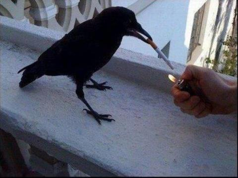
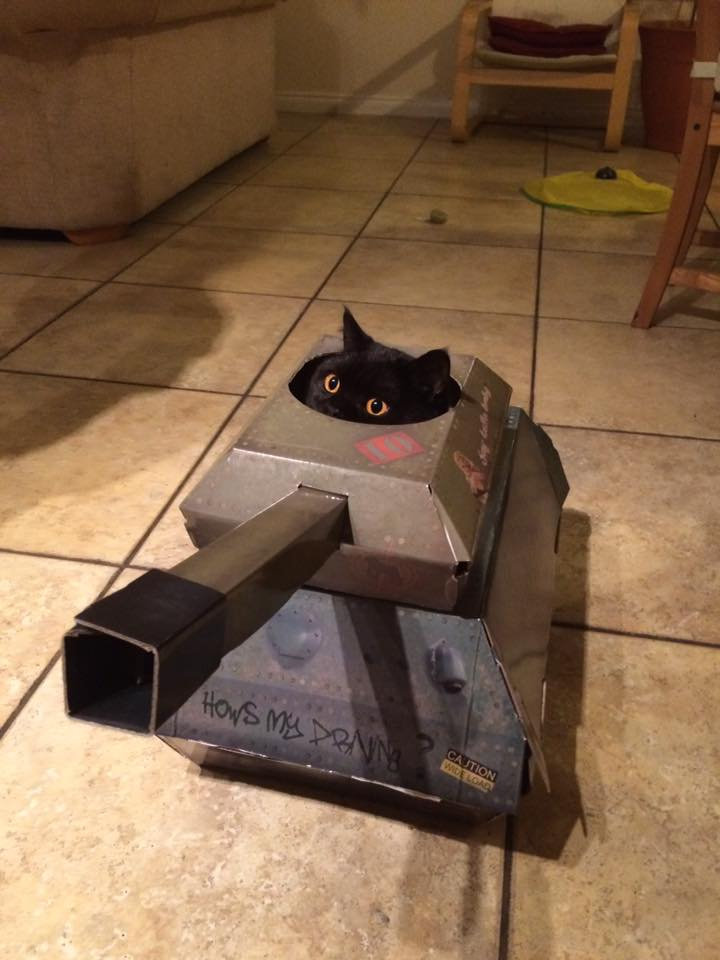

Top 5 Craziest Animal Moments Caught On Camera!
As shocking as this might seem, animals are not always cute, innocent creatures that want to coinhabit the
earth with humans. Soon, you will come to find that some of these animals seek to cause only chaos and
destruction, threatening all civilization as we know it.
The follwing information may be too scary to accept, therefore reader/viewer discretion is advised.
Here is a list of all the crazy animals caught on camera:
- Aggressive penguin becomes a surface-to-air missle
- Crow has a cigarette in its mouth
- Fish drinking someone's drink
- Dog gets pulled over by a cop
- Cat sits in a tank
Description: Absolutely horrifying! An aggressive penguin intimidates a poor bystander,
and when they slip and fall through the ice, the penguin immediately activates its hidden
solid-state rocket boosters, shoots upwards, and proceeds to dive strait towards its
helpless prey.

Description: We tend to think that animals want to preserve our earth's health just as much
as humans do. However, some do not. Look at this example of the crow; it is clearly
demonstrating how much it hates the environment by smoking a cigarette. Clearly, it's goal
is to raise the carbon footprint of the earth, which will heat up our atmosphere, causing our
polar ice caps to melt, causing our oceans to rise.. All in an effort to put our coastlines
underwater!
Description: Have you ever wondered why the global supply of fresh water is dwindling? Here
is one (of many) culprits responsible! This fish boarded a civilian's boat, demanded to be fed
the person's water, threatened to capsize the boat (which I cannot empirically confirm because I
cannot speak fish, but I imagine that's what it said), and then proceeded to drink the water,
before quickly retreating into the waters. This is just one example of how our freshwater
supply is being taken away.

Description: This image captures the brave moment a police officer pulls over a
reckless dog driving a hypercar. Moments before this picture was taken, the officer and
canine were engaged in a life or death, high speed chase down the interstate. The officer
was thankfully able to get the dog to stop, by promising a bag of doggy treats. Unaware of
the trickery, the dog slowed down and pulled over. And that is when this image was taken.
Why was the dog driving recklessly? How did it get a hypercar? The answer? We may
never know. But, we must never think for a moment that the dog isn't part of the
global effort to supercede the human race.

Description: As we have seen in these examples, more and more animals are beginning
to reject the social hiearchy that places humans on top. In this last example, I hope to truly
highlight the danger we humans are in. In this image, a bystander happened to witness a cat
hijacking a tank. What the cat planned on doing with the tank is still unknown. According
to eyewitness testimony, the cat had managed to start the tank, but seeing a bystander
taking pictures, quickly abandoned the vehicle. Its motives, while unclear, should
not be underestimated. With such firepower, the cat could have caused serious damage!